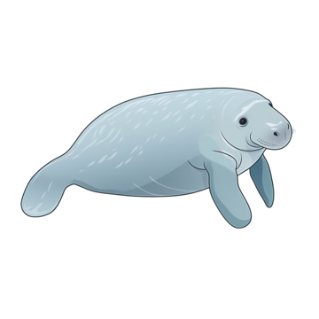

Introducción
Los manatíes, conocidos también como vacas marinas, son mamíferos acuáticos fascinantes que habitan en aguas cálidas y poco profundas. Su apariencia pacífica y movimientos lentos los han convertido en una de las especies más queridas por los amantes de la vida marina.

Descripción General
Los manatíes son animales grandes y herbívoros, pertenecientes a la orden Sirenia. Existen tres especies principales:
- Manatí del Caribe (Trichechus manatus): También conocido como manatí antillano, habita en las aguas costeras del Caribe y del Golfo de México.
- Manatí del Amazonas (Trichechus inunguis): Se encuentra en los ríos de la cuenca del Amazonas y es la única especie de manatí que habita exclusivamente en agua dulce.
- Manatí Africano (Trichechus senegalensis): Vive en las costas y ríos de África Occidental.
Los manatíes pueden llegar a medir hasta 4 metros de longitud y pesar alrededor de 600 kilogramos. Tienen un cuerpo robusto y fusiforme, una piel gruesa y rugosa de color gris o marrón, y una cola ancha y plana que utilizan para propulsarse en el agua.
Hábitat
Los manatíes prefieren las aguas cálidas y poco profundas, como estuarios, bahías y ríos lentos. Pueden encontrarse tanto en agua dulce como salada, y a menudo migran en busca de temperaturas adecuadas para su supervivencia, especialmente durante los meses más fríos.
El manatí del Caribe, por ejemplo, puede encontrarse en la costa del sureste de Estados Unidos, en particular en Florida, así como en toda la región del Caribe y algunas partes de América Central y del Sur.